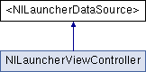

|
Nimbus
0.3.3
An iOS framework whose growth is bounded by O(documentation).
|
<NILauncherDataSource> Protocol Reference
The launcher data source used to populate the view. More...
Inheritance diagram for <NILauncherDataSource>:

Public Member Functions | |
| (CGSize) | - buttonDimensionsInLauncherView: |
| Override the default button dimensions 80x80. | |
| (NSInteger) | - numberOfRowsPerPageInLauncherView: |
| Override the default number of rows which is dynamically calculated. | |
| (NSInteger) | - numberOfColumnsPerPageInLauncherView: |
| Override the default number of columns which is dynamically calculated. | |
| (NSInteger) | - numberOfPagesInLauncherView: |
| The total number of pages to be shown in the launcher view. | |
| (NSInteger) | - launcherView:numberOfButtonsInPage: |
| The total number of buttons in a given page. | |
| (UIButton *) | - launcherView:buttonForPage:atIndex: |
| Retrieve the button to be displayed at a given page and index. | |
Detailed Description
The launcher data source used to populate the view.
Definition at line 139 of file NILauncherView.h.
Member Function Documentation
| - (CGSize) buttonDimensionsInLauncherView: | (NILauncherView *) | launcherView | [optional] |
Override the default button dimensions 80x80.
The default dimensions will fit the following grids:
iPhone within a navigation controller Portrait: 3x4 Landscape: 5x2
The returned dimensions must be positive non-zero values.
 1.7.4
1.7.4